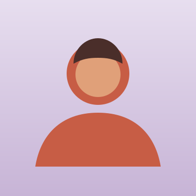

No actors, no cherry-picked miracles. Just honest reflections from people who were exactly where you might be now — unsure, a little nervous, and quietly hoping.

"I spent years being the strong one. Here, for two days, I got to put it down. I didn't fall apart — I came back together."
Maya came to us at 18, certain she was "too closed-off" for something like this. Three months on, she's training to be a peer mentor.
Maya, 19 · London
The same person, a little while later — thinking about themselves differently.
"I thought confidence meant never feeling nervous."
"I realised confidence is doing things even when you're nervous."
"I was constantly comparing myself to everyone online."
"I started paying attention to my actual life instead of everyone else's highlight reel."
"I kept waiting to feel ready before putting myself out there."
"I learned that courage comes before confidence, not after."
"I felt like everyone else had life figured out except me."
"I realised most people are figuring it out as they go."
"I came in convinced I was the most closed-off person there. I left having cried, laughed, and actually let people see me."
"It's the first place an adult ever asked me what I thought — and actually waited for the answer. I didn't know how much I needed that."
"I expected to be 'fixed'. Instead I was just understood. That turned out to be the thing that helped."
"My relationship with my mum is completely different now. I learned how to say the hard things kindly. We both cried when I got home."
"No selling, no cult vibes, no toxic positivity. Just honest, warm, well-run. Genuinely, I was relieved."
"I still message the people from my group two years later. They knew a version of me I'd never shown anyone."
"I'd been on a waiting list for support for months. This didn't replace that — but it was the first time in ages I felt hopeful."
"I'm naturally a sceptic. I kept waiting for the catch. There wasn't one. I left lighter than I'd felt in years."
"I finally understood why I push people away. Just naming it changed something. I've stopped doing it as much."
"My anxiety didn't magically vanish. But I left with actual tools, and people I can text at 2am. That's worth everything."
"I went because a friend dragged me. I stayed because, for once, nobody wanted anything from me except for me to be honest."
"I'd never have called myself someone who 'does feelings'. Now I check in with myself most days. Small thing, big difference."
Courage comes before confidence. Always.— Something everyone leaves knowing
Based on follow-up reflections from guests, six months on.
You don't need to be ready. You just need to be willing to find out what's on the other side of showing up.
Save your place